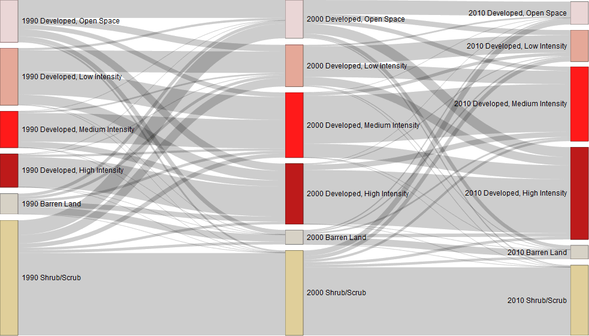
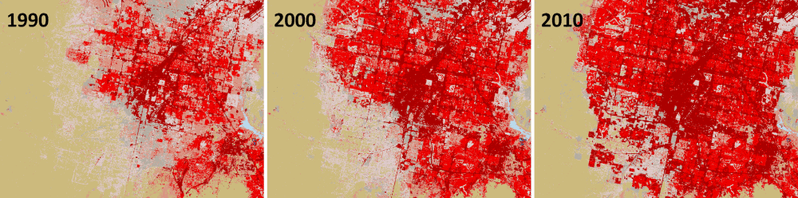

Sankey diagrams are a specific type of flow diagram, in which the width of the arrows is shown proportionally to the flow quantity. In this tutorial we'll be using a Sankey diagram to visualize from-to land cover change in the area of Las Vegas, NV for three time slices: 1990, 2000, and 2010. Shown in the following figure is the resulting diagram so you have a sense for what we're producing and how it can help interpret land cover change. Each column of colored nodes represents a year and each node within columns represents a land cover type. The height of a node is prorportial to the area of that particular land cover type for a given year on the landscape. The grey lines of varying width linking nodes show the proportion of the landscape moving from one cover type to another type.
The data we used to produce this Sankey diagram is from three maps of NLCD land cover classes we've repdicted using Landsat imagery for years 1990, 2000, and 2010. The primary land cover classes present during these time slices include:
The following figure shows the NLCD-like maps for a region around Las Vegas, NV 1990, 2000, and 2010.
In the next section we'll walk through generating a Sankey diagram from these maps using the R library networkD3. The image data and scripts can be downloaded from the resources section. Keep in mind the code is very flexible to generating similar from-to Sankey diagrams from any integer raster data, using more or less classes and observation slices.
You can download R here, select an archive network near you and follow install instructions on their site. RStudio can be downloaded here, follow the sites download and install instructions. To get the libraries enter the following in the RStudio command prompt: install.packages(c('raster', 'networkD3', 'dplyr'))
These files should represent some slice of data from a time series that can be summarized as a proportion of the spatial domain of the data. Any kind of classified map with integer values that code categories. In this example we use land cover maps from 1990, 2000, and 2010. Each file is organized as a separate row of a data.frame. We put them in order of there occurance in time. We also identify what node column each file should represent and what band the data is in.
fileInfo <- data.frame(nodeCol=1, rasterFile="D:/mock/sankey_nlcd/nlcd_1990.tif", rasterBand=1) %>%
rbind(data.frame(nodeCol=2, rasterFile="D:/mock/sankey_nlcd/nlcd_2000.tif", rasterBand=1)) %>%
rbind(data.frame(nodeCol=3, rasterFile="D:/mock/sankey_nlcd/nlcd_2010.tif", rasterBand=1))
You need to alter the nodeCol, rasterFile, and rasterBand arguments as needed for your files.
Here we build a data.frame with one row per node in the diagram. There will be a node for each time slice (raster file/node column) and each map class of interest in a given time slice. In our Las Vegas land cover example, we have three time slices and 6 classes of interest per time slice, so we have a total of 18 (3 * 6) nodes in our diagram. For each node we append a row to our nodeInfo data.frame
nodeName - a text string describing the time slice and the map classnodeID - a unique integer used by the networkD3 Sankey plotting function to link nodes and associated node namesmapClass - an integer value for this particular class in the raster mapnodeCol - an integer value describing what node column this class/time slice belongs to, starting with 1 on the left and incrementing by 1 for each successive column to the rightnodeGroup - a text string that is used to define node groups so they can be colored similarily, here we color the nodes by map class.nodeInfo <- data.frame(nodeName="1990 Developed, Open Space" , nodeID=0, mapClass=21, nodeCol=1, nodeGroup='a') %>%
rbind(data.frame(nodeName="1990 Developed, Low Intensity" , nodeID=1, mapClass=22, nodeCol=1, nodeGroup='b')) %>%
rbind(data.frame(nodeName="1990 Developed, Medium Intensity" , nodeID=2, mapClass=23, nodeCol=1, nodeGroup='c')) %>%
rbind(data.frame(nodeName="1990 Developed, High Intensity" , nodeID=3, mapClass=24, nodeCol=1, nodeGroup='d')) %>%
rbind(data.frame(nodeName="1990 Barren Land" , nodeID=4, mapClass=31, nodeCol=1, nodeGroup='e')) %>%
rbind(data.frame(nodeName="1990 Shrub/Scrub" , nodeID=5, mapClass=52, nodeCol=1, nodeGroup='f')) %>%
rbind(data.frame(nodeName="2000 Developed, Open Space" , nodeID=6, mapClass=21, nodeCol=2, nodeGroup='a')) %>%
rbind(data.frame(nodeName="2000 Developed, Low Intensity" , nodeID=7, mapClass=22, nodeCol=2, nodeGroup='b')) %>%
rbind(data.frame(nodeName="2000 Developed, Medium Intensity" , nodeID=8, mapClass=23, nodeCol=2, nodeGroup='c')) %>%
rbind(data.frame(nodeName="2000 Developed, High Intensity" , nodeID=9, mapClass=24, nodeCol=2, nodeGroup='d')) %>%
rbind(data.frame(nodeName="2000 Barren Land" , nodeID=10, mapClass=31, nodeCol=2, nodeGroup='e')) %>%
rbind(data.frame(nodeName="2000 Shrub/Scrub" , nodeID=11, mapClass=52, nodeCol=2, nodeGroup='f')) %>%
rbind(data.frame(nodeName="2010 Developed, Open Space" , nodeID=12, mapClass=21, nodeCol=3, nodeGroup='a')) %>%
rbind(data.frame(nodeName="2010 Developed, Low Intensity" , nodeID=13, mapClass=22, nodeCol=3, nodeGroup='b')) %>%
rbind(data.frame(nodeName="2010 Developed, Medium Intensity" , nodeID=14, mapClass=23, nodeCol=3, nodeGroup='c')) %>%
rbind(data.frame(nodeName="2010 Developed, High Intensity" , nodeID=15, mapClass=24, nodeCol=3, nodeGroup='d')) %>%
rbind(data.frame(nodeName="2010 Barren Land" , nodeID=16, mapClass=31, nodeCol=3, nodeGroup='e')) %>%
rbind(data.frame(nodeName="2010 Shrub/Scrub" , nodeID=17, mapClass=52, nodeCol=3, nodeGroup='f'))
Here we define the color of the nodes by their group. We construct a vector of hex colors for each unique node group defined in the nodeGroup parameter above.
groupColor <- c("#E8D1D1","#E29E8C", "#FF0000", "#B50000", "#D2CDC0", "#DCCA8F")
Here the font size, font family, and nodeWidth are defined
fontSize <- 12 nodeWidth <- 30 fontFamily <- "sans-serif"
These few lines prepare the input data for later use. The group color vector is collapsed to a single string for use in the Sankey function, the fileInfo data.frame is joined to the nodeInfo data.frame, and two vector class fields are converted to character
groupColor <- paste0('"',paste(groupColor, collapse = '", "'),'"')
nodeInfo <- dplyr::left_join(nodeInfo, fileInfo, by='nodeCol')
nodeInfo$nodeName <- as.character(nodeInfo$nodeName)
nodeInfo$rasterFile <- as.character(nodeInfo$rasterFile)
This step generates links between the nodes. A nested for loop identifies the number of pixels moving some one class to another for each from-to time slice. A new row in a data.frame is appended for each link between nodes, that describes the link's node source, target, and the number of pixels from the source to the target.
NodeCols <- sort(unique(nodeInfo$nodeCol))
linkInfo <- data.frame()
for(i in 1:(length(NodeCols)-1)){
fromCol <- dplyr::filter(nodeInfo, nodeCol==NodeCols[i])
toCol <- dplyr::filter(nodeInfo, nodeCol==NodeCols[i+1])
fromR <- values(raster(fromCol$rasterFile[1], fromCol$rasterBand[1]))
toR <- values(raster(toCol$rasterFile[1], toCol$rasterBand[1]))
for(f in 1:nrow(fromCol)){
for(t in 1:nrow(toCol)){
nFromTo <- length(which(fromR == fromCol$mapClass[f] & toR == toCol$mapClass[t]))
linkInfo <- rbind(linkInfo, data.frame(source=fromCol$nodeID[f], target=toCol$nodeID[t], value=nFromTo))
}
}
}
Here we call the sankeyNetwork function from the networkD3 library using fields from the linkInfo and nodeInfo data.frames to generate the plot. It will be printed to the RStudio viewer. Adjust the view window size height and width, and rerun this final code snippet to optimize the plot size for your purpose.
sankeyNetwork(Links = linkInfo, Nodes = nodeInfo,
Source = "source",
Target = "target",
Value = "value",
NodeID = "nodeName",
NodeGroup = "nodeGroup",
fontSize = fontSize,
fontFamily = fontFamily,
nodeWidth = nodeWidth,
colourScale = paste0('d3.scaleOrdinal().range([',groupColor,'])'))
You can alter the to plot the diagram directly to an image file, but I prefer to export the viewer image using the Export button in the RStudio viewer. Doing this allows you to manually adjust the order of the nodes in the columns so that they are in the same order. To do this, simply click/hold/drag the nodes into position. Once they are set, you can save the representation to file. Note that networkD3 was built using the htmlwidgets framework so can be integrated into R Markdown and Shiny applications.